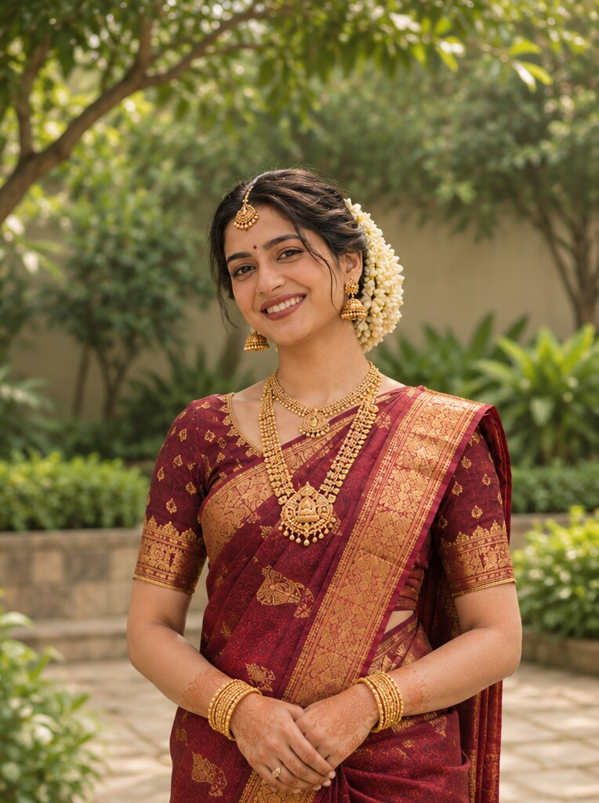
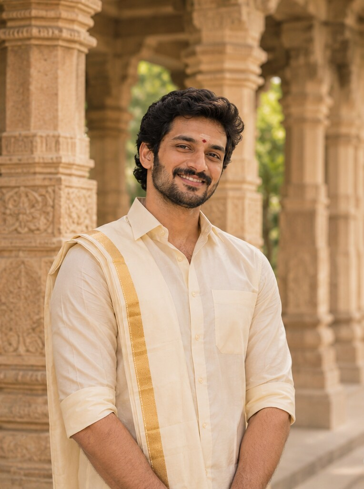

திருமணம்
மல்லிகை திருமண மண்டபம்
ஆர். எஸ். புரம், கோயம்புத்தூர்
திருமணச் சடங்கிலும் மாலை மாற்றும் நிகழ்விலும் கலந்து கொள்ளுங்கள். அதே மண்டபத்தில் மதியம் 12 மணிக்கு விருந்து நடைபெறும்.
குடும்பத்தினருடன் அன்புடன் அழைக்கிறோம்
யாழினி & ஆதவன்
கோயம்புத்தூர்
அன்பான அழைப்பு
காலையில் நடைபெறும் திருமணத்திலும், அதைத் தொடர்ந்து நடைபெறும் மதிய விருந்திலும் கலந்து கொள்ளுங்கள். மறுநாள் மாலை வரவேற்பு விழாவிலும் உங்களை அன்புடன் எதிர்பார்க்கிறோம்.


திருமண முகூர்த்தம் வரை
அனைத்து நேரங்களும் இந்திய நேரப்படி
மல்லிகை திருமண மண்டபம்
ஆர். எஸ். புரம், கோயம்புத்தூர்
திருமணச் சடங்கிலும் மாலை மாற்றும் நிகழ்விலும் கலந்து கொள்ளுங்கள். அதே மண்டபத்தில் மதியம் 12 மணிக்கு விருந்து நடைபெறும்.
தாமரை அரங்கம்
பெருந்துறை சாலை, ஈரோடு
மறுநாள் மாலை வரவேற்பில் கலந்து கொண்டு, இரவு விருந்திலும் புகைப்படங்களிலும் எங்களுடன் இணைந்திடுங்கள்.
மண்டபப் பெயர்கள் கற்பனையானவை. வரைபடங்கள் அந்தப் பகுதிகளை மட்டும் காட்டுகின்றன.

மணமகள்
மீரா, அரவிந்த் தம்பதியின் மகள்

மணமகன்
கவிதா, சுரேஷ் தம்பதியின் மகன்
காலை 9:30 மணிக்குத் திருமணம் தொடங்கும். 15 நிமிடங்களுக்கு முன்னதாக வருமாறு கேட்டுக்கொள்கிறோம்.
Yes. Join us at தாமரை அரங்கம் from 6:00 PM on Monday, 22 February.
அன்புடன்
உங்கள் வருகையை அன்புடன் எதிர்பார்க்கிறோம்.